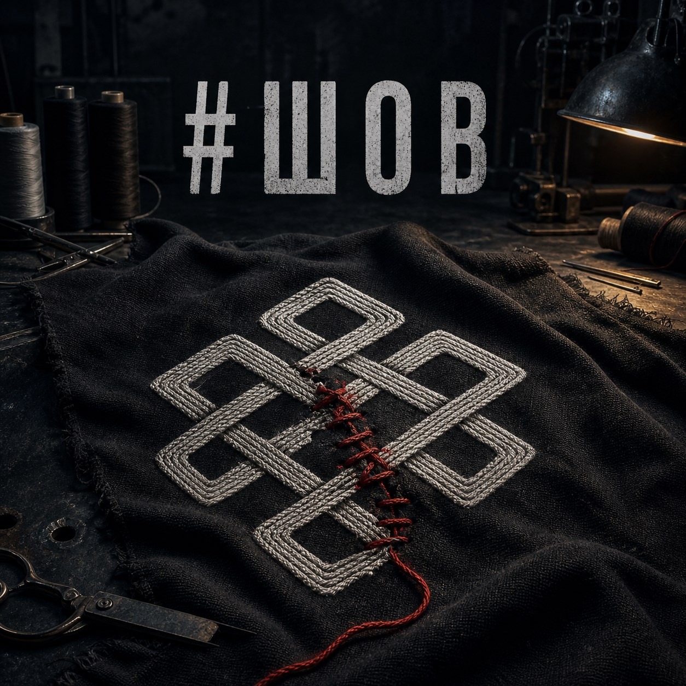

13th
Лимитированная одежда, базовая линейка и вещи, которые рождаются внутри цеха.
Рязань · одежда · музыка · визуальные истории
ArtS13Studio — небольшая мастерская, где разные направления соединяются в одну историю. Без громких обещаний. Просто продолжаем делать своё.

Новый релиз · 13 AI the Dark
То, что разошлось, не обязательно выбрасывать. Иногда шов не прячет разрыв, а становится частью новой истории.
Один цех — несколько дорог
Здесь соединяется всё, что мы создаём: одежда, музыка, совместные проекты и закулисье мастерской.
Лимитированная одежда, базовая линейка и вещи, которые рождаются внутри цеха.
Dark Alternative Rock, современные технологии и холодная северная атмосфера.
Совместные идеи, мерч для команд и визуальные проекты с теми, кто близок по духу.
13 AI the Dark
Три первых трека оставляем здесь как превью. Полная музыкальная библиотека находится в отдельном разделе.

Первый шаг. Начало истории.

Скорость, выбор и точка невозврата.

Коллаборация с Custom23.
Остаёмся на связи